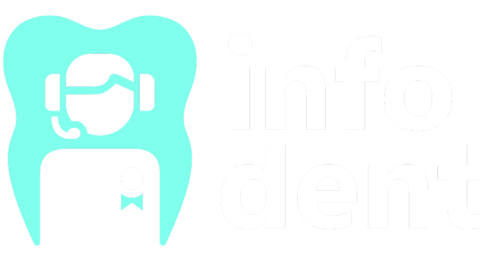

Política de privacidad de Infodent
Esta Política de privacidad describe cómo se recopila, utiliza y comparte su información personal cuando visita infodent.mekabi.pro (denominado en lo sucesivo el “Sitio”).
INFORMACIÓN PERSONAL QUE RECOPILAMOS
Cuando visita el Sitio, recopilamos automáticamente cierta información sobre su dispositivo, incluida información sobre su navegador web, dirección IP, zona horaria y algunas de las cookies que están instaladas en su dispositivo. Además, a medida que navega por el Sitio, recopilamos información sobre las páginas web individuales o los productos que ve, las páginas web o los términos de búsqueda que lo remitieron al Sitio e información sobre cómo interactúa usted con el Sitio. Nos referimos a esta información recopilada automáticamente como “Información del dispositivo”.
Recopilamos Información del dispositivo mediante el uso de las siguientes tecnologías:
COOKIES
Aquí tienes una lista de cookies que utilizamos. Las enlistamos para que puedas elegir si quieres optar por quitarlas o no.
- Los “Archivos de registro” rastrean las acciones que ocurren en el Sitio y recopilan datos, incluyendo su dirección IP, tipo de navegador, proveedor de servicio de Internet, páginas de referencia/salida y marcas de fecha/horario.
- Las “balizas web”, las “etiquetas” y los “píxeles” son archivos electrónicos utilizados para registrar información sobre cómo navega usted por el Sitio.
¿CÓMO UTILIZAMOS SU INFORMACIÓN PERSONAL?
Utilizamos la Información del dispositivo que recopilamos para ayudarnos a detectar posibles riesgos y fraudes (en particular, su dirección IP) y, en general, para mejorar y optimizar nuestro Sitio (por ejemplo, al generar informes y estadísticas sobre cómo nuestros clientes navegan e interactúan con el Sitio y para evaluar el éxito de nuestras campañas publicitarias y de marketing).
También utilizamos Google Analytics para ayudarnos a comprender cómo usan nuestros clientes el Sitio. Puede obtener más información sobre cómo Google utiliza su Información personal aquí: https://www.google.com/intl/es/policies/privacy/. Puede darse de baja de Google Analytics aquí: https://tools.google.com/dlpage/gaoptout.
Finalmente, también podemos compartir su Información personal para cumplir con las leyes y regulaciones aplicables, para responder a una citación, orden de registro u otra solicitud legal de información que recibamos, o para proteger nuestros derechos.
PUBLICIDAD ORIENTADA POR EL COMPORTAMIENTO
Como se describió anteriormente, utilizamos su Información personal para proporcionarle anuncios publicitarios dirigidos o comunicaciones de marketing que creemos que pueden ser de su interés. Para más información sobre cómo funciona la publicidad dirigida, puede visitar la página educativa de la Iniciativa Publicitaria en la Red ("NAI" por sus siglas en inglés) en http://www.networkadvertising.org/understanding-online-advertising/how-does-it-work.
Puede darse de baja de la publicidad dirigida mediante el siguiente enlace:
FACEBOOK: https://www.facebook.com/settings/?tab=ads
NO RASTREAR
Tenga en cuenta que no alteramos las prácticas de recopilación y uso de datos de nuestro Sitio cuando vemos una señal de No rastrear desde su navegador.
RETENCIÓN DE DATOS
Cuando realiza un pedido a través del Sitio, mantendremos su Información del pedido para nuestros registros a menos que y hasta que nos pida que eliminemos esta información.
CAMBIOS
Podemos actualizar esta política de privacidad periódicamente para reflejar, por ejemplo, cambios en nuestras prácticas o por otros motivos operativos, legales o reglamentarios.
CONTÁCTENOS
Para obtener más información sobre nuestras prácticas de privacidad, si tiene alguna pregunta o si desea presentar una queja, contáctenos por correo electrónico a infodent.oficial@gmail.com